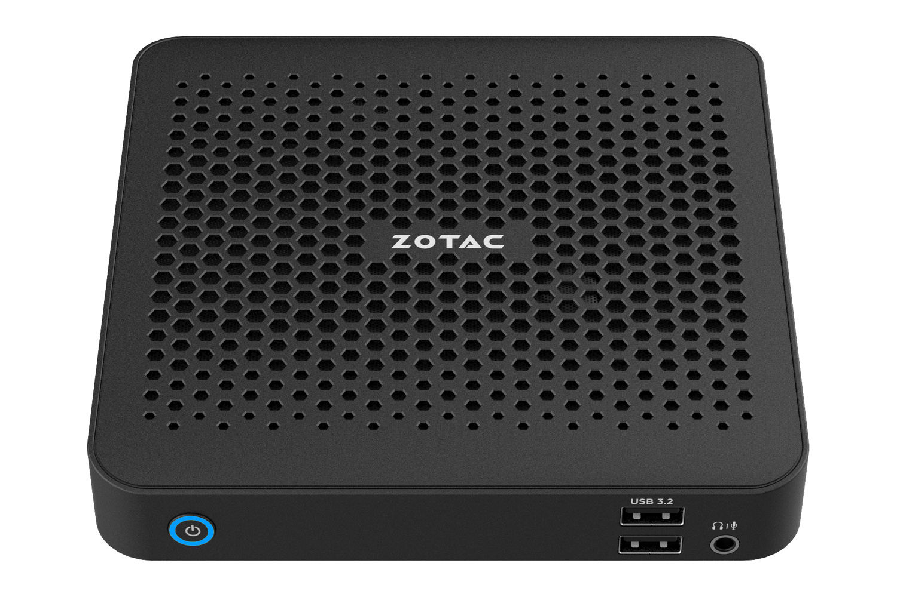
ZBOX edge MI676 / MI656差が出たのはCPUスループットだけ — 兄弟機2台の同一条件実測で答えを出す選び分けレビュー
ZOTAC の小型PC「ZBOX edge」シリーズに、Intel Core Ultra（シリーズ2 / Arrow Lake-H）を搭載した兄弟機 MI676（Core Ultra 7 255H）と MI656（Core Ultra 5 225H）が加わりました。 本レビューは2機を同一の自動化環境・同一グラフィックスドライバーで実測し、 「どちらを選ぶべきか」に実測値で答えを出すことを目的に、 軽量3D・CPUスループット・2時間連続動画再生・温度と電力の挙動を1本の記事で読み解きます。
MI676 Core Ultra 7 255H / Arc 140T
MI656 Core Ultra 5 225H / Arc 130T
共通筐体 ZBOX edge
0.64L 149.5×149.5×28.5mm
最大2画面 HDMI 2.1 ＋ DP 1.4
VESA ブラケット同梱
ベアボーン RAM / SSD 別売
Wi-Fi 7 / Bluetooth 5.4
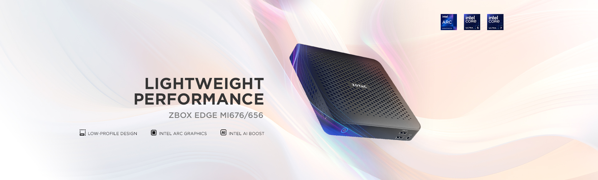
実測サマリー（3行）
- 2機の差が出たのは CPU スループットだけ。7-Zip 実測で MI676 83,847 MIPS対 MI656 75,268 MIPS — +11.4%（CrystalMark CPUマルチも +4.6%）。
- 軽量3D（3DMark Night Raid）は MI676 26,729 / MI656 26,778 — 差 0.2%未満で実質同値。1080p動画の2時間連続再生も両機とも完走（負荷1%未満・10W台）。
- 結論はシンプル: 表示・再生・軽量3Dが主体なら MI656 で足りる。圧縮・変換・多重処理など CPU スループットが効く現場は MI676。
共通の筐体・共通の設計 — 違いは SoC だけの兄弟機
ZBOX edge MI676 と MI656 は、ZOTAC の小型PC「ZBOX」のうち薄型・省スペースの edge（M シリーズ）に属する兄弟機です。 筐体・冷却設計・拡張構成は共通で、違いは搭載する SoC のみ。 MI676 が Intel Core Ultra 7 255H（16コア / 16スレッド・最大5.1GHz・内蔵GPU: Arc 140T）、 MI656 が Intel Core Ultra 5 225H（14コア / 14スレッド・最大4.9GHz・内蔵GPU: Arc 130T）を搭載します。 いずれもベアボーン仕様で、メモリー（SO-DIMM DDR5 ×2）とストレージ（M.2 NVMe）は導入側で選定します。
「上位の MI676 と下位の MI656 で、実際のところ何がどれだけ違うのか」—— カタログスペックの差（Pコア2基・最大クロック 0.2GHz・GPU実行ユニット1基）が実務にどう現れるかを、以降の実測で確認します。
搭載するCPU・グラフィックスの基礎知識
CPUCore Ultra 7 255H / Ultra 5 225H とは
Intel「Core Ultra（シリーズ2 / Arrow Lake-H）」世代の薄型高性能（H）系CPU。255H は 16コア / 16スレッド（Pコア6＋Eコア8＋低電力Eコア2）・最大5.1GHz、225H は 14コア / 14スレッド（Pコア4＋Eコア8＋低電力Eコア2）・最大4.9GHz。いずれも NPU（Intel AI Boost）を内蔵する「AI PC」世代です。
ポイント2機の差はPコア2基と最大クロック 0.2GHz。シングルスレッド性能はほぼ同じで、差が出るのは全コアを使うスループット処理です。この構図がそのまま実測結果（§05）に現れます。
GPUIntel Arc 140T / 130T（CPU内蔵）とは
CPU パッケージに統合された Arc グラフィックス。Arc 140T は実行ユニット（Xeコア）8基、130T は 7基で、いずれも XMX（AI演算ユニット）を備えます。メインメモリーを表示用に共有し、事務描画・動画再生支援・軽量3Dを担います。
ポイントカタログ上は 140T が上位のため差が出ることを想定しましたが、軽量3Dの実測（§06）では明確な差が得られませんでした。実行ユニット数の違いがそのままスコアに出るとは限らない——というのが実測の結果です。
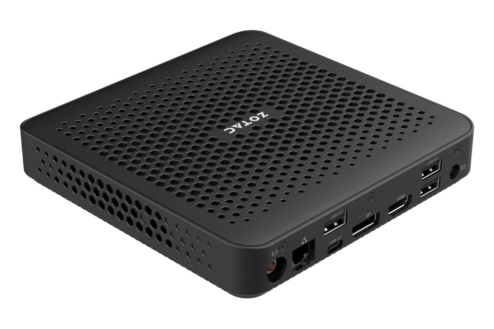
実機のハードウェア確認（CPU-Z / GPU-Z）
計測に使った2個体の構成を、CPU-Z と GPU-Z で確認します。MI676 は Core Ultra 7 255H（Pコア6＋Eコア8＋LPコア2＝16コア/16スレッド）、 MI656 は Core Ultra 5 225H（Pコア4＋Eコア8＋LPコア2＝14コア/14スレッド）。 マザーボードのSMBIOS表記は両機とも ZBOX-MI672/MI652 という共通のプラットフォーム名（BIOS 5.32）を返すため、 機体の判別はCPUで行っています。メモリーは両機とも DDR5-5600 SO-DIMM 16GB×2 を装着し（§03）、 GPU-Z では両機ともグラフィックスドライバー 32.0.101.8801（WHQL）で揃っていることが確認できます。
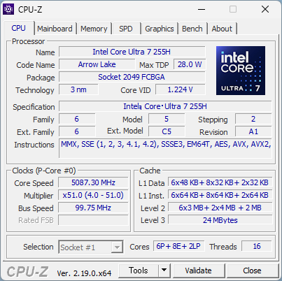
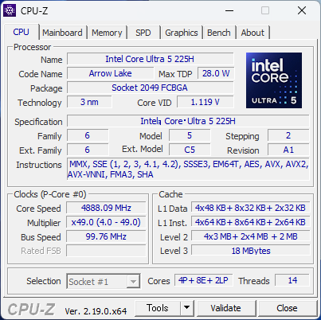
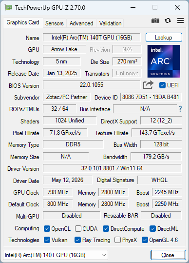
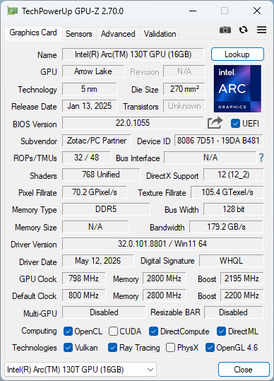
テスト環境・計測方法 — 2機を同一条件で揃える
機種別の構成（違うのはここだけ）
| ZBOX edge MI676 | ZBOX edge MI656 | |
|---|---|---|
| CPU | Core Ultra 7 255H 16C/16T・最大5.1GHz | Core Ultra 5 225H 14C/14T・最大4.9GHz |
| グラフィックス | Intel Arc 140T（内蔵） | Intel Arc 130T（内蔵） |
| 計測日 | 2026-08-12 | 2026-08-11 |
2機共通の条件
| GPUドライバー | 32.0.101.8801（両機で統一） |
|---|---|
| メモリー（テスト構成） | 32GB DDR5-5600（16GB×2・デュアルチャネル） |
| ストレージ（テスト構成） | 1TB NVMe SSD（システムドライブ・両機同一構成） |
| OS | Windows 11 Home 25H2（Build 26200） |
| 電源プラン | 高パフォーマンス |
製品仕様（公式・2機共通）
| 映像出力 | HDMI ×1（HDMI 2.1 仕様の 4K 60Hz HDR に対応）＋ DisplayPort 1.4 ×1（最大 4096×2160@60Hz）・最大2画面 |
|---|---|
| USB | USB 3.2（10Gbps）×6 — 前面 Type-A ×2／背面 Type-A ×3・Type-C ×1 |
| オーディオ | HDMI 経由 デジタル 8ch／前面 ステレオ・マイク コンボ端子 |
| ネットワーク | Gigabit Ethernet ×1／Wi-Fi 7・Bluetooth 5.4 |
| メモリー（公称） | DDR5-5600/5200 SO-DIMM ×2（最大 64GB） |
| ストレージ（公称） | M.2 NVMe PCIe 4.0 x4（2230/2240）×1 ＋ M.2 2280（NVMe PCIe 4.0 x4 / SATA3 兼用）×1 |
| 冷却 | アクティブ冷却（ブロワーファン＋ヒートシンク） |
| 外形・質量 | 149.5 × 149.5 × 28.5 mm・約 0.64L／約 0.45kg（ベアボーン） |
| 電源 | AC アダプター（DC 19V・65W） |
| 盗難対策 | セキュリティロックスロット（Kensington 対応・側面） |
| 付属品 | VESA マウントブラケット・Wi-Fi アンテナ ほか（§04） |
計測方法と本記事の読み方
両機の数値は社内のベンチマーク自動化環境による実測で、各テスト3回計測の中央値（VLC 連続再生のみ1回）。
表示倍率100%・電源プラン「高パフォーマンス」・テスト間クールダウンを含む同一の計測プロファイルを2機に適用し、
グラフィックスドライバーも 32.0.101.8801 で統一しています。
温度・電力は計測エージェントによる1秒間隔のCPUパッケージ温度・電力・負荷ログ
（MI676: 7,763行 / MI656: 8,287行・いずれもVLC 2時間を含む全区間）から各テストの実行区間を切り出して集計しています。
代表スクリーンショットは各指標の中央値に最も近い回（自動選定）のものを使用しており、表の値と画面表示が一致しない場合があります。
比較チャートは本記事の2機のみで構成し、他記事の機材との横断比較は行いません。
外観と設置性 — 置けるか・つなげるか・組み込めるか
性能の前に、モノとしての2機を確認します——設置場所に置けるか、必要な機器をつなげられるか、導入構成をどう組み込むか。 MI676 と MI656 は筐体・装備が共通のため、本節は2機共通で読めます。
寸法 — A4 の4割弱の設置面積、高さ 28.5mm
外形は 149.5 × 149.5 × 28.5 mm・約 0.64L、質量は約 0.45kg（ベアボーン時）。 設置面積は A4 用紙（297×210mm）の4割弱の正方形で、高さは 28.5mm の薄型です。 机上ならモニターの脇や下、什器なら棚板のわずかな隙間に収まり、「PC の置き場所」を新たに用意せずに導入できます。
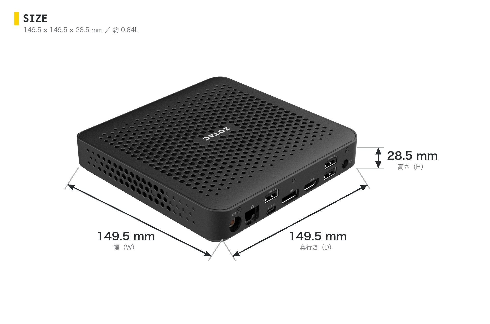
梱包・同梱物 — VESA ブラケットが入っている
ベアボーン構成の同梱物は、本体・AC アダプター・電源コード・Wi-Fi アンテナ・USB フラッシュドライブ（ドライバー類）・ クイックスタートガイド・保証書、そして VESA 対応マウントブラケット1組（取り付けネジ付き）。 モニター背面への固定が買った時点で完結します。
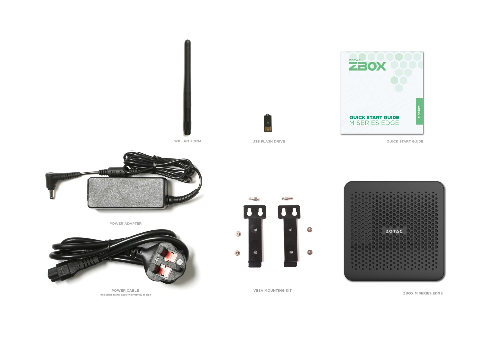
設置は3通り — 置く・隠す・掛ける
設置は机上の横置き、同梱ブラケットによるモニター背面（VESA）への固定、壁面への取り付けの3通り。 冷却はブロワーファンによるアクティブ式で、通気開口は天面・側面・底面に分散して取られています。 どの置き方でも開口をふさがないことが基本です（壁面への取り付けは、環境に応じて追加の金具・工具が必要な場合があります）。
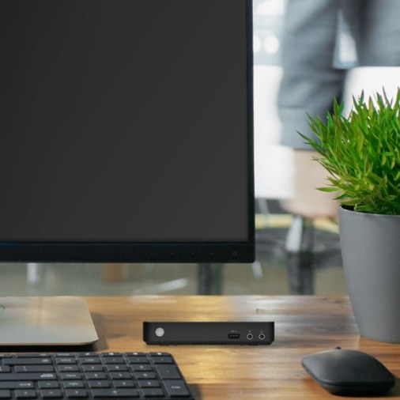
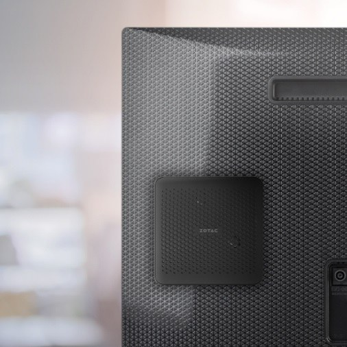
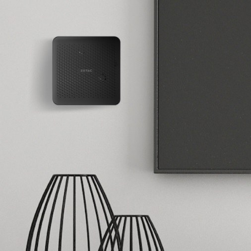
設置イメージはいずれも ZOTAC 公式画像。
前面 — 日常の抜き差しはここで足りる
前面は電源ボタン（電源 LED リング内蔵）、USB 3.2 Type-A ×2（10Gbps）、マイク/ヘッドホンのコンボ端子。 USB メモリーやヘッドセットの抜き差しを、本体を回さずに済ませられます。
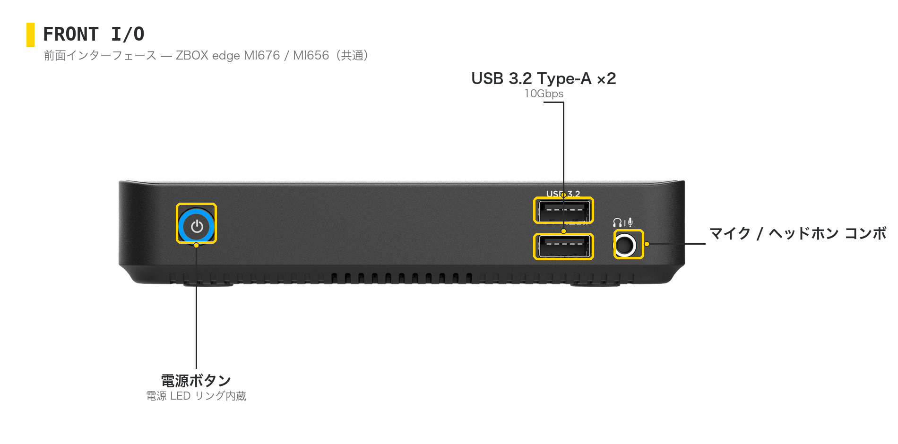
背面 — 常設配線をまとめる
背面は HDMI 2.1 ×1 ＋ DisplayPort 1.4 ×1（各 最大 4096×2160@60Hz・最大2画面）、 USB 3.2 Type-A ×3 と Type-C ×1（いずれも 10Gbps）、Gigabit Ethernet、Wi-Fi アンテナ端子、DC 入力。 事務用途で標準的な2画面構成をそのまま賄い、常設の周辺機器を背面へまとめられます。
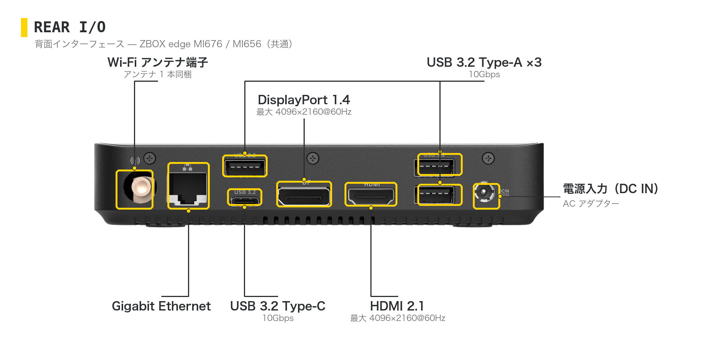
盗難対策 — 側面にロックスロット
側面にセキュリティロックスロット（Kensington 対応）を備えます。 受付カウンターや共用スペースなど人の出入りがある場所でも、ワイヤーロックで本体ごと固定できます。
中身 — 28.5mm に収めたブロワーファンとヒートシンク
薄型筐体の内部では、CPU の熱をアルミフィンのヒートシンクで受け、ブロワーファン1基が筐体外へ送り出します。 この冷却系が、全コア負荷時の持続 35〜38W を 85°C 前後以下に収めています（§09）。
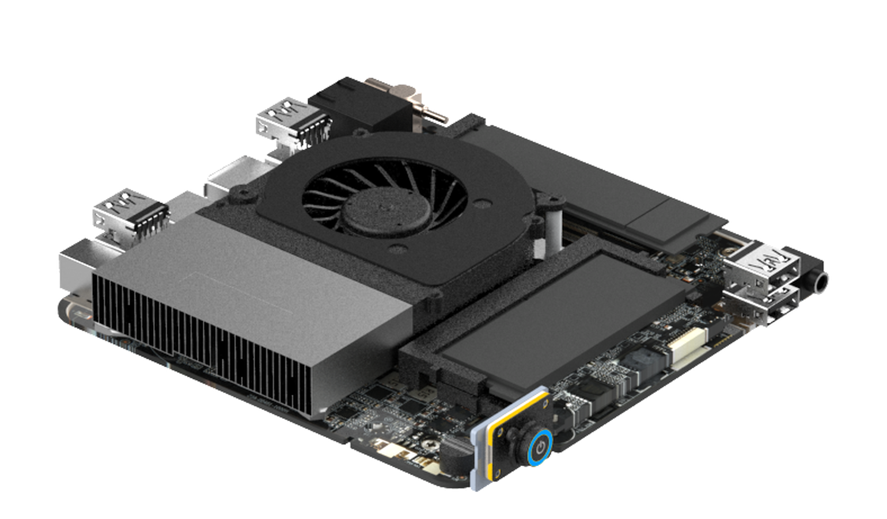
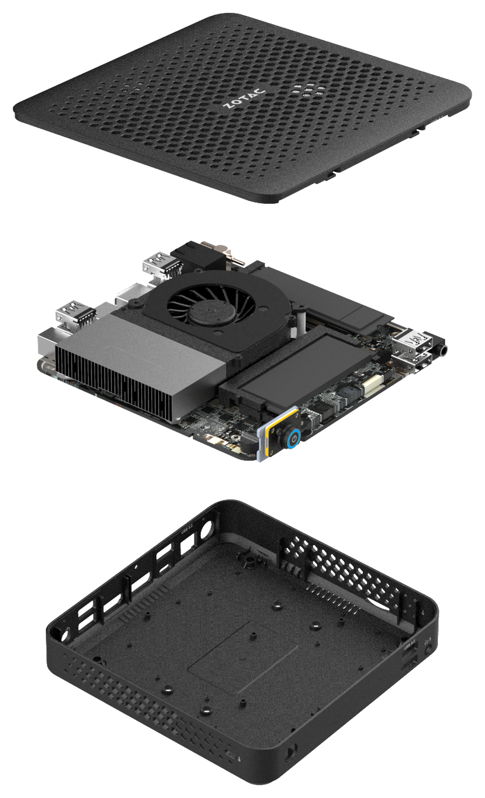
クリックで拡大保守アクセス — メモリー・ストレージは導入側で組み込む
両機ともベアボーンのため、メモリー（SO-DIMM DDR5 ×2・最大 64GB）と M.2 SSD は導入側で選定・組み込みます。 M.2 スロットは NVMe PCIe 4.0 x4（2230/2240）×1 ＋ 2280（NVMe PCIe 4.0 x4 / SATA3 兼用）×1 の2基。 本レビューのテスト構成も DDR5-5600 16GB×2 と NVMe SSD を実際に組み込んで計測しました（§03）。 内蔵GPUの性能はメモリー帯域の影響を受けるため、2枚差しのデュアルチャネル構成を推奨します（§06）。 内部アクセスにはプラスドライバーが必要です（同梱されません）。
動作音について
両機はブロワーファンによるアクティブ冷却です。本レビューでは動作音の定量計測（騒音計）は実施していません。
参考として、全コア負荷時の CPU 電力は両機とも持続 35〜38W・瞬間 40W 級（§09）で、冷却はこの電力帯に対する設計です。
ここまでが「モノとして」の2機——共通筐体ゆえ、置き方・つなぎ方・組み込み方に差はありません。以降の性能実測で、唯一の違いである SoC の差がどこに現れるかを確かめます。
CPUスループット — 2機の差はここだけ、そして確実に出る
本記事の主眼です。全コアを使い切る 7-Zip 内蔵ベンチマーク（圧縮・展開）の実測で、 MI676 は 83,847 MIPS、MI656 は 75,268 MIPS — 差は +11.4%。 Pコア2基と最大クロックの差が、スループット処理でそのまま数値になりました。
7-Zip 26.00 内蔵ベンチマーク（総合）
MIPS ／ 高いほど良い ／ 3回計測の中央値
MI676Core Ultra 7 255H
83,847
MI656Core Ultra 5 225H
75,268
内訳（中央値run）: MI676 圧縮 87,471 / 展開 80,223 MIPS（16スレッド）、MI656 圧縮 77,863 / 展開 72,673 MIPS（14スレッド）。圧縮 +12.3% / 展開 +10.4% と、どちらの方向でも一貫して差が出ています。
CrystalMark Retro の CPU 系サブスコアも同じ構図です。全コアを使う CPUマルチが 97,612 対 93,330 で +4.6%。 一方、1コアだけを使う CPUシングルは 10,925 対 11,046 でほぼ同値（−1.1%）でした。 つまり2機の体感差は「1操作の速さ」ではなく、圧縮・変換・ビルド・多重処理のような「まとめて処理する時間」に現れます。
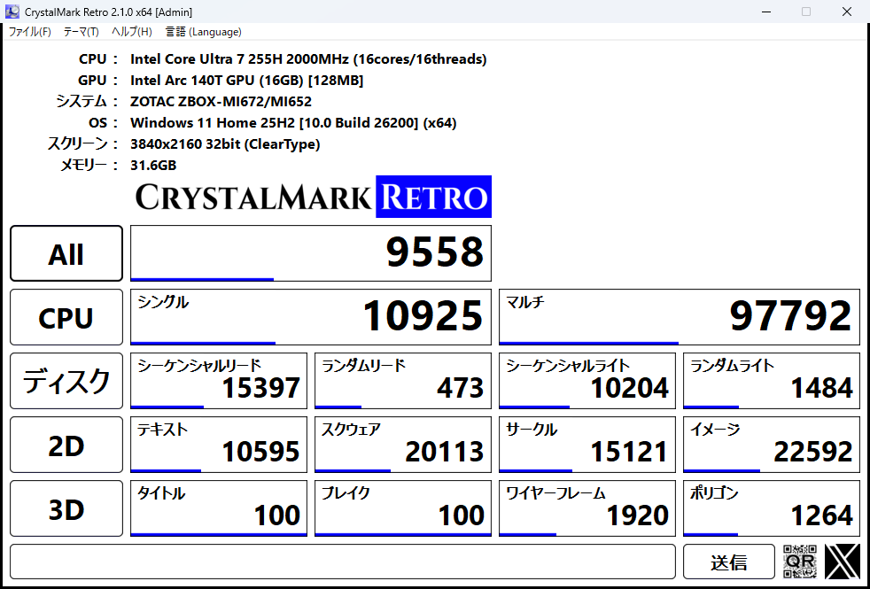
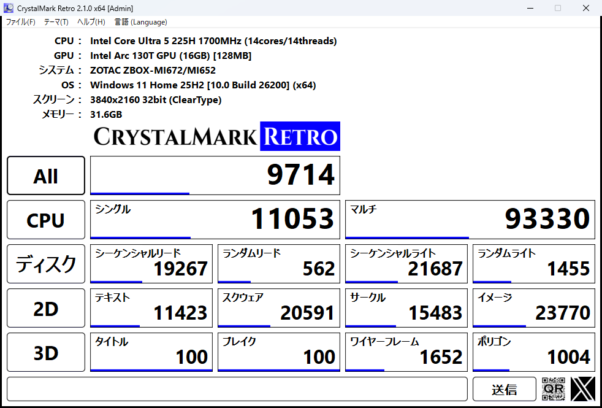
規模感の参考として、当サイトの同一テストでは省電力小型機の ZBOX（N150搭載）が約 13,800 MIPS、 dGPU搭載のデスクトップ級 MAGNUS（Core Ultra 7 265）が約 147,000 MIPS です。本2機はその中間、 「小型筐体で実務のスループットも確保したい」というレンジに位置します。
再現性も確認できています。3回計測の変動係数（cv）は MI676 0.30% / MI656 0.11% と小さく、 実行のたびに結果がばらつくことはありません。負荷中の挙動は §09 で確認します。
Arc 140T と 130T — カタログの差は、この負荷帯では出ない
内蔵GPU向けの 3DMark Night Raid で、2機の内蔵 Arc を同一条件で比較しました。 結果は MI676（Arc 140T）26,729、MI656（Arc 130T）26,778 — 差は0.2%未満で実質同値です。
3DMark Night Raid（総合）
score ／ 高いほど良い ／ 3回計測の中央値
MI676Arc 140T
26,729
MI656Arc 130T
26,778
内訳（中央値run）: MI676 Graphics 32,198 / CPU 13,621、MI656 Graphics 32,316 / CPU 13,586。Graphics サブスコアも −0.4% と誤差の範囲です。
Arc 140T は実行ユニット（Xeコア）8基、130T は 7基と、カタログ上は 140T が上位です。 この構成差から内蔵GPUにも差が出ることを想定して計測しましたが、3回計測しても両機の差は0.2%未満にとどまり、明確な差は得られませんでした （変動係数は MI676 0.07% / MI656 0.27% と小さく、ばらつきに埋もれたわけではありません）。 Graphics サブスコアでも同じ傾向で、実行ユニット数の違いがそのままスコアに出るとは限らない、というのがこの負荷帯での実測結果です。 したがってNight Raid が対象とする軽量3Dの負荷帯では、2機のGPUを同等とみなして選定してよいと言えます。
この結果の範囲について
本レビューで計測したGPU系のテストは Night Raid と1080p動画再生のみです。より重い3D負荷、GPU演算、AI推論（NPUを含む）、
動画エンコードなどでの差は検証していないため、これらが要件に含まれる場合は別途の確認が必要です。
また差が出なかった要因（メモリー帯域・電力枠・ドライバーなど）は、本実測からは特定できません。
1080p を2時間流し続ける — 両機とも完走、負荷は1%未満
サイネージ・掲示端末・監視表示のような「画面を出し続ける」用途を想定し、 VLC で 1080p 動画のループ再生を120分間連続実行する実測を両機で行いました。結果は明快です。
| MI676 | MI656 | |
|---|---|---|
| 120分連続再生 | 完走（7,200s） | 完走（7,200s） |
| 再生レート（実時間比） | 1.0003（乖離 0.03%） | 1.0004（乖離 0.04%） |
| ハードウェアデコード | D3D11VA 有効 | D3D11VA 有効 |
| 再生中の平均CPU負荷 | 0.6% | 0.8% |
| CPU電力（中央値） | 10.7W | 10.2W |
| パッケージ温度（中央値） | 47°C | 45°C |
両機とも GPU の動画再生支援（D3D11VA）が有効に働き、CPU負荷1%未満・10W台・パッケージ温度40°C台後半で 2時間を回り切りました。この用途において2機の差はなく、再生・表示が主目的なら下位の MI656 で過不足ありません。
この結果の範囲について
本実測は120分間の再生継続とレート・デコード経路の確認であり、フレーム落ちゼロの保証や、24時間365日運用の適性を示すものではありません。
常時運用の設計には、設置環境の温度条件・電源計画・保守体制を含めた検討が必要です。
ストレージ — テスト個体構成の参考値
両機ともベアボーンで SSD は別売のため、以下は本レビューで組み込んだ SSD 構成での参考値です。 テスト構成では両機とも同一型番の NVMe SSD（PCIe 4.0 世代）をシステムドライブに組み込みましたが、 それでもストレージの数値は SLC キャッシュなどドライブ側の状態に左右され、回・セッションによって大きく振れます。 2機の優劣としては読まないでください（実運用の速度は搭載する SSD で決まります）。
| CrystalDiskMark 9.0.3（システムドライブ） | MI676 Read | MI676 Write | MI656 Read | MI656 Write |
|---|---|---|---|---|
| SEQ1M Q8T1MB/s | 3,394.26 | 954.48 | 3,219.68 | 1,110.77 |
| SEQ1M Q1T1MB/s | 1,436.00 | 692.08 | 977.99 | 781.64 |
| RND4K Q32T1MB/s | 462.22 | 408.37 | 468.71 | 348.52 |
| RND4K Q1T1MB/s | 48.70 | 206.11 | 43.55 | 114.32 |
各値は3回計測の中央値。システムドライブとして NVMe SSD が実用十分な速度で動作することの確認が目的です。 M.2 スロットの公称は PCIe 4.0 x4 ×2基です（§04）。
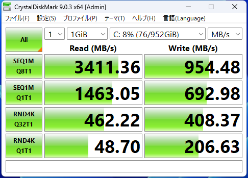
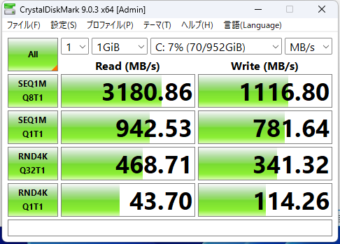
温度・電力の挙動 — 同じ筐体、同じ絞り方、同じ安定
全テスト実行中の 1秒間隔ログから、テスト区間ごとの CPU パッケージ温度と電力を切り出しました。 共通筐体の兄弟機らしく、2機の熱・電力の挙動はほぼ相似形です。
MI676（Core Ultra 7 255H）
| 実行区間 | 平均負荷 | 温度 中央/最大 | CPU電力 中央/最大 |
|---|---|---|---|
| 7-Zip ×3（全コア） | 70.7% | 70 / 83°C | 37.4 / 40.5W |
| CrystalMark ×3 | 13.9% | 75 / 85°C | 24.6 / 39.8W |
| Night Raid ×3 | 12.2% | 61 / 83°C | 25.4 / 39.6W |
| VLC 120分連続再生 | 0.6% | 47 / 81°C | 10.7 / 24.8W |
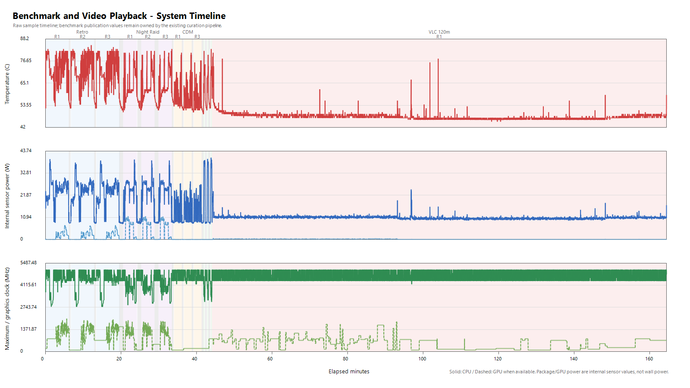
MI656（Core Ultra 5 225H）
| 実行区間 | 平均負荷 | 温度 中央/最大 | CPU電力 中央/最大 |
|---|---|---|---|
| 7-Zip ×3（全コア） | 68.8% | 68 / 75°C | 37.7 / 39.5W |
| CrystalMark ×3 | 17.7% | 69 / 84°C | 24.0 / 39.4W |
| Night Raid ×3 | 14.6% | 61 / 82°C | 26.6 / 40.9W |
| VLC 120分連続再生 | 0.8% | 45 / 77°C | 10.2 / 22.4W |
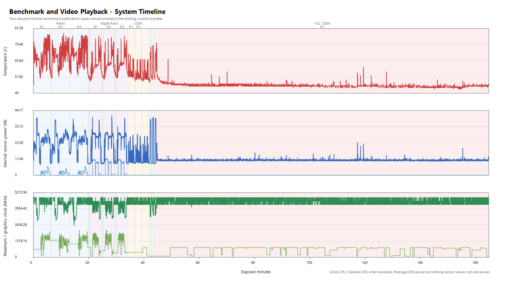
読み取れることは3つあります。第一に、全計測を通したパッケージ温度の最大は両機とも85°C前後（MI676: 85°C / MI656: 84°C）で、 設計上の天井に対して余裕を残して制御されています。第二に、全コア負荷時の CPU電力は両機とも持続35〜38W・瞬間40W級で共通—— 同じ筐体・同じ冷却設計に対して、2機とも同じ電力枠で動いていることが分かります。 第三に、7-Zip と Night Raid の総合スコアは3回計測の変動係数が 0.3% 以下と小さく、これらのテストでは連続実行による落ち込みは見られませんでした。ただし CrystalMark Retro の CPU 系サブスコアは MI656 の3回目だけが落ちており（cpu_single 11,046 / 11,053 → 9,899、cpu_multi 93,557 / 93,330 → 85,051）、すべての指標で一様に安定しているわけではありません（代表値は中央値運用のため影響しません）。
温度データの注記
温度・電力は CPU 内部センサーの値で、システム全体の消費電力（AC入力）ではありません。
Intel 内蔵GPU環境ではセンサー仕様上 GPU 単体の温度が取得できないため、温度は iGPU を同一パッケージに含む CPU パッケージ温度で代表しています
（GPU の電力・クロック・使用率は取得できており、Night Raid 実行中の GPU 電力は最大 11.5W でした）。
温度・スコアの実測のみからサーマルスロットリングの有無を断定することはできません。室温・設置環境・個体差により値は変動します。
想定される用途と選び分けマップ
実測が示した構図——「GPU・再生・軽量3Dは同等、CPUスループットだけ +11.4%」——を、そのまま選定基準に落とします。
MI656 で足りる用途 — 表示・再生・事務が主体
サイネージ・掲示・受付端末（§07: 2時間連続再生を負荷1%未満で完走）、 一般的な事務端末、POS・キオスクのフロントエンド。 軽量3Dの実測では両機に明確な差が出なかったため（§06）、これらの用途で上位機を選ぶ理由は本レビューの範囲では見当たりません。
MI676 が効く用途 — CPUスループットが業務時間に直結する現場
ファイルの圧縮・展開やデータ変換をともなうバックオフィス処理、複数サービスの同時稼働（§05: 7-Zip +11.4% / CPUマルチ +4.6%）、 端末上でのビルド・バッチ処理。「まとめて処理する時間」が短縮され、日々繰り返される処理ほど差が積み上がります。 写真の一括現像・画像変換や簡単な動画のカット編集のような、CPU 性能で対応できる範囲のライトなクリエイティブ作業も MI676 なら視野に入ります。
共通の留意点
いずれもベアボーンのため、メモリー・SSD の選定と組み込みが必要です。本実測はデュアルチャネル（16GB×2）構成で行っており、 内蔵GPUの性能はメモリー帯域の影響を受けるため、1枚差しのシングルチャネル構成では §06 の結果より低下する可能性があります。デュアルチャネル構成を推奨します。
選び分けマップ
MI656 で足りる
- サイネージ・掲示・受付などの表示/再生端末
- 一般事務・フロントエンド端末
- 軽量3D（Night Raid の負荷帯では MI676 と明確な差なし）
- コストを抑えて台数を揃えたい案件
MI676 が効く
- 圧縮・変換・データ処理をともなうバックオフィス
- 複数サービス・多重処理の同時稼働
- 端末上のビルド・バッチ処理
- 写真現像・簡単な動画編集などのライトクリエイティブ
- 「処理待ち時間」が業務効率に直結する現場
構成のカスタマイズについて
両機ともベアボーンのため、メモリー・SSD・OS を業務に合わせて選定できます。構成を組み込んだシステム販売にも対応しているため、
定番構成のままの導入も、案件ごとの細かな構成変更も、開発・デザイン・製造まで一気通貫の ZOTAC だからこそご相談いただけます。
まとめ — 「差が出るのはCPUスループットだけ」と分かって選べる2台
同一条件の実測が示した2機の関係は、カタログの印象よりずっとシンプルでした。 本レビューで計測した範囲では、内蔵GPU・動画再生・温度と電力の挙動に明確な差は出ませんでした。違いは CPU スループットの +11.4%（7-Zip実測）だけです。 だからこそ選び分けに迷いがありません——ワークロードに CPU の「まとめて処理する時間」が含まれるなら MI676、 含まれないなら MI656 が適正コストです。 どちらを選んでも、7-Zip と Night Raid が3回計測で変動係数 0.3% 以下という再現性と、40W級の電力枠で85°C以下に収まる熱設計は共通しています。
付録: 全ベンチマーク結果
両機の元数値を一覧にまとめます（計測条件は §03 参照）。
| テスト | MI676 各回の値 | 中央値 | cv% | MI656 各回の値 | 中央値 | cv% |
|---|---|---|---|---|---|---|
| 3DMark Night Raidscore・高いほど良い | 26,736 / 26,729 / 26,692 | 26,729 | 0.07 | 26,665 / 26,838 / 26,778 | 26,778 | 0.27 |
| 7-Zip 26.00 CPUMIPS・高いほど良い | 83,468 / 83,847 / 84,086 | 83,847 | 0.30 | 75,268 / 75,335 / 75,136 | 75,268 | 0.11 |
| CrystalMark Retro 2.1.0 Allscore・高いほど良い ※1 | 9,658 / 9,558 / 9,511 | 9,558 | 0.64 | 9,662 / 9,714 / 9,648 | 9,662 | 0.29 |
| CrystalDiskMark SEQ1M Q8T1 ReadMB/s ※1 | 3,411.36 / 3,179.19 / 3,394.26 | 3,394.26 | 3.17 | 3,219.68 / 3,180.86 / 3,255.88 | 3,219.68 | 0.95 |
| VLC 1080p ループ 120分再生継続の確認・1回 | 完走（rate 1.0003） | — | — | 完走（rate 1.0004） | — | — |
凡例: cv＝変動係数（標準偏差÷平均×100%）。※1 CrystalMark Retro の総合スコアと CrystalDiskMark はテスト個体のSSD構成に依存するため、2機の優劣としては読まないでください（CrystalMark の CPU 系サブスコアのみ比較可: CPUシングル 10,925 対 11,046・CPUマルチ 97,612 対 93,330）。2D/3D 系サブスコアは僅差で優劣が割れ（2D は MI656、3D は MI676 が僅かに上）、実質同等です。 同一機・同一SSDでもストレージ計測は指標によって大きく振れます（総合値でセッション間最大9%程度、シーケンシャル読み書きでは run 間で3〜4割振れる例も確認）。ストレージ値は参考値に留めています。
よくある質問
MI676 と MI656、結局どちらを選べばよい？
実測では、軽量3D（Night Raid）と1080p動画の2時間連続再生は両機とも同等でした。差が出たのはCPUスループットのみで、7-Zip 実測で MI676 が +11.4% 上回ります。表示・再生・軽量3Dが主体なら MI656 で足り、圧縮・変換・多重処理など CPU スループットが効く現場では MI676 が適します。
内蔵GPU（Arc 140T と 130T）の差はある？
カタログ上は Arc 140T が上位のため差を想定して計測しましたが、3DMark Night Raid を3回計測しても MI676（Arc 140T）26,729、MI656（Arc 130T）26,778 と差は0.2%未満にとどまり、明確な差は得られませんでした。少なくともこの軽量3Dの負荷帯では2機を同等とみなして選定できます。ただし計測したGPU系テストは Night Raid と動画再生のみで、より重い3D負荷やGPU演算・AI処理での差は検証していません。
動画を流し続ける用途（サイネージ等）に使える？
1080p ループ再生の120分連続実測を両機で行い、いずれも完走を確認しました。ハードウェアデコード（D3D11VA）が有効で、再生中の CPU 負荷は1%未満・電力10W台・温度は中央値45〜47°Cでした。なお本実測は120分間の再生継続の確認であり、フレーム落ちゼロや24時間365日運用を保証するものではありません。
メモリーとストレージは付属する？
両機ともベアボーン仕様のため、メモリー（SO-DIMM DDR5）とストレージ（M.2 NVMe SSD）は別売です。本レビューは両機とも DDR5-5600 16GB×2（計32GB・デュアルチャネル）で計測しています。内蔵GPU性能はメモリー帯域の影響を受けるため、デュアルチャネル構成を推奨します。